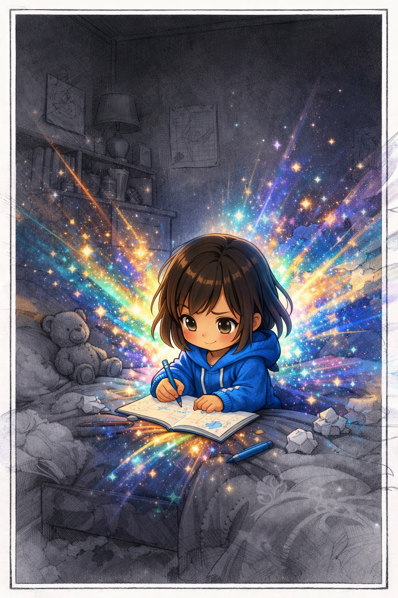
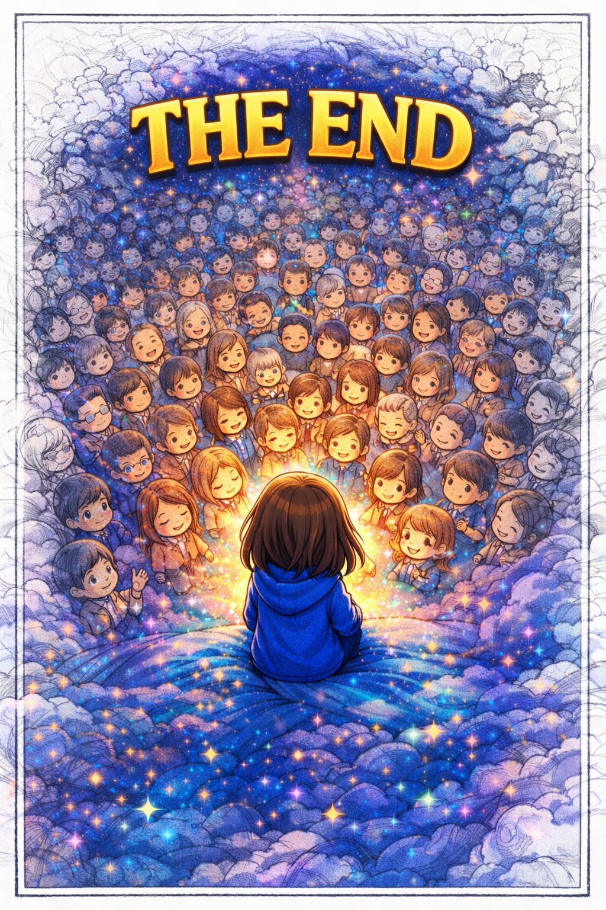

Dear Leilanie Chilado,
Sorry this letter is a bit late. I’ve been a little overwhelmed for a while—catching up on schoolwork, finishing other letters like this one, and even helping another brother put one together. Still, I really wanted to follow through and write to encourage you after the e-date we had a few weeks ago.
Psalm 92:12–14
12 The righteous will flourish like a palm tree, they will grow like a cedar of Lebanon; 13 planted in the house of the Lord, they will flourish in the courts of our God. 14 They will still bear fruit in old age, they will stay fresh and green,
I wanted to encourage you that you are a capable and talented woman. You have real gifts—that you may not see their benefits clearly right now—but if you nurture them with patience and intention, they can grow into something meaningful and steady in your life. Sometimes the issue isn’t the thing itself—it’s the environment around it. Just like travel isn’t the problem if the stress actually comes from a difficult family, in the same way, certain interests or opportunities in your life may still hold good fruit if approached in a healthier place and season.
I want to encourage you to stay open. Keep planting seeds, even when you’re unsure which ones will grow. God often works through small, consistent steps rather than sudden clarity. As you keep investing in the right things—you’ll begin to see where real joy, purpose, and steadiness start to form.
You also carry a presence that can bring calm and joy to the people around you. That matters more than you might realize. The Kingdom needs people who don’t just do things, but who create warmth, peace, and encouragement wherever they are.
I hope this reminds you that your life has direction, your gifts have purpose, and your future has room to flourish.
— The Tola
